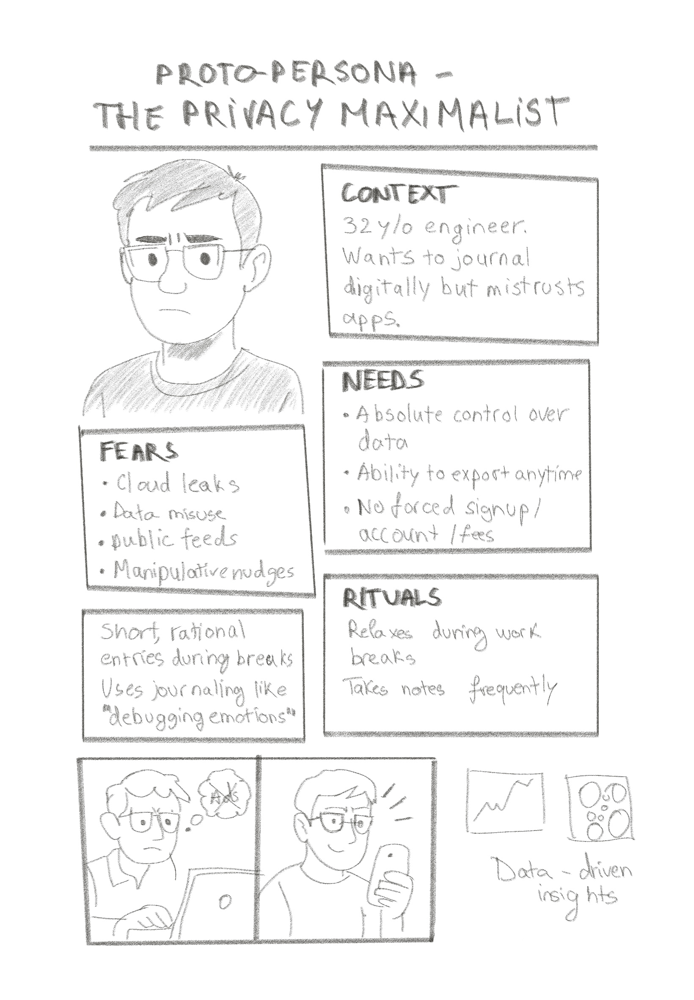
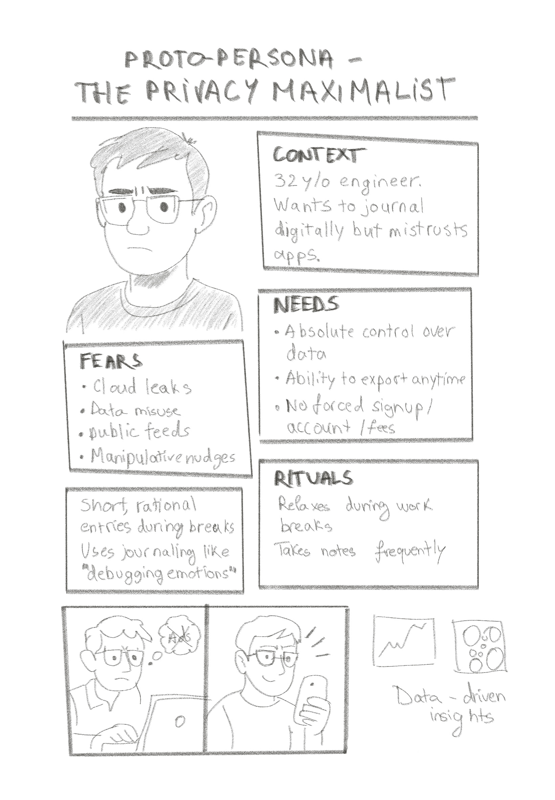

Nuuko
Journaling that feels like a safe nook, not a blank page test
✦ Emotion-first design
üîí Privacy by design
üåø Gentle guidance
"Since journaling has always been a paper experience, I deliberately chose to do most of my design exploration on paper to stay connected to the authentic, tactile nature of journaling."
Color Palette


 
